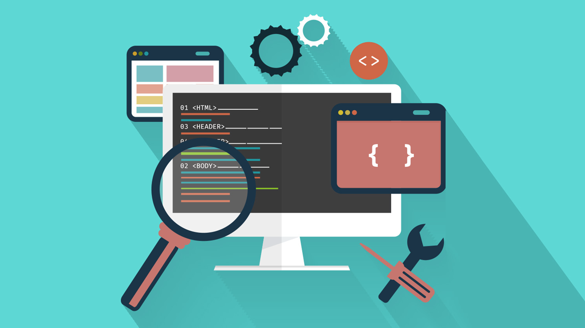

-

Front-end 개발자가 되기 위해서 공부해야 할 것과 준비해야 되는
것들은?(HTML, CSS, JavaScript, JSON, React, Angular, Vue, SASS,
LESS, PostCSS, RESTful...)
홍승희
조회수 80만회
-
Back-end 개발자가 되기 위해서 공부해야 할 것과 준비해야 되는
것들은?(Java, JSP, Spring, Python, Rubi, PHP, MariaDB, My-SQL,
MS-SQL, Linux, Window, Oracle...)
홍승희
조회수 75만회
-
Full-stack 개발자는 필수인가? 선택인가? | Front-end 개발자면
Back-end를 몰라도 되는가? | Back-end 개발자면 Front-end를 몰라도
되는가?
홍승희
조회수 90만회